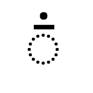
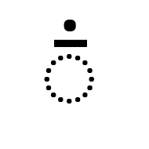

Sunuwar
The modern form of this script was developed by Karna Jentich in 1942, to write the Kiranti-Kõits (Sunuwar/Mukhia) language, which is spoken by around 40,000 people in Nepal and Sikkim (India). In Nepal, the use of the script is promoted by the Sunuwar Welfare Society. It has also been one of the official languages of Sikkim since 1996. The script has been used in newspapers, government records, and other publications. In 2001 the Sikkim government mandated that state-run schools should offer instruction in both the primary language of the state and in a local language. Various additions and improvements have been made to the script, particularly around the turn of the century, and further changes to the orthography were proposed as recently as the early 2020s.
Basic features. In Nepal the Sunuwar script is used as an alphabet, whereas in Sikkim it is used as an abugida. The repertoire for each is largely the same, but there are differences in usage for a small number of characters.
Sunuwar text runs from left to right in horizontal lines. Words are separated by spaces, and the orthography is unicameral.
Consonants. The Sunuwar block contains 27 consonant letters. Around the early 2000s the repertoire was augmented with new consonant letters to represent aspirated and retroflex sounds. However, use of the script is not yet fully standardised, and sometimes older ambiguous or digraph-based spellings still appear.
In Nepal, consonants have no inherent vowel and consonant clusters are simply indicated by groups of consonant letters. A lone consonant is not pronounced with a following vowel. In Sikkim, however, consonants have an inherent vowel, pronounced /ə/, and
 U+0331 COMBINING MACRON BELOW
(called sangmilu) is used to indicate suppression of the inherent vowel in clusters or when the letter stands alone. There are no conjuncts.
U+0331 COMBINING MACRON BELOW
(called sangmilu) is used to indicate suppression of the inherent vowel in clusters or when the letter stands alone. There are no conjuncts.
Onset consonant clusters with /-j/ or /-r/ follow a similar pattern. In Nepal these medial consonants are written using ordinary consonant letters, whereas in Sikkim a medial /-j/ is written using sangmilu
followed by
 U+11BD4 SUNUWAR LETTER YAT
and medial /-r/ is written using
U+11BD4 SUNUWAR LETTER YAT
and medial /-r/ is written using
 U+032D COMBINING CIRCUMFLEX ACCENT BELOW (called sangrums).
U+032D COMBINING CIRCUMFLEX ACCENT BELOW (called sangrums).
Vowels. The Sunuwar block has 6 vowel letters that are all ordinary, spacing characters. Long vowel sounds can be indicated using a symbol called laissi after the vowel letter.
 U+003A COLON
is used for this. A colon may also be used as punctuation; if it occurs after a word ending with a vowel letter it will typically be preceded by a space in order to remove ambiguity.
U+003A COLON
is used for this. A colon may also be used as punctuation; if it occurs after a word ending with a vowel letter it will typically be preceded by a space in order to remove ambiguity.
Nasalisation is indicated in Nepal using
 U+0303 COMBINING TILDE
above a vowel letter. In Sikkim,
U+0310 COMBINING CANDRABINDU
(called taslathenk), is used, rendered as a flat line with a dot above.
U+0303 COMBINING TILDE
above a vowel letter. In Sikkim,
U+0310 COMBINING CANDRABINDU
(called taslathenk), is used, rendered as a flat line with a dot above.

Tone marks. A set of 3 combining marks are promoted in Nepal to represent Sunuwar tones. These are encoded as
 U+030D COMBINING VERTICAL LINE ABOVE,
U+030D COMBINING VERTICAL LINE ABOVE,
 U+0301 COMBINING ACUTE ACCENT,
and
U+0301 COMBINING ACUTE ACCENT,
and
 U+0300 COMBINING GRAVE ACCENT.
Over diphthongs the tone mark typically appears above the first vowel, and the nasalisation mark over the second, avoiding the need for stacked glyphs. In Sikkim, tone marks are not used.
U+0300 COMBINING GRAVE ACCENT.
Over diphthongs the tone mark typically appears above the first vowel, and the nasalisation mark over the second, avoiding the need for stacked glyphs. In Sikkim, tone marks are not used.
Symbols.
 U+11BE1 SUNUWAR SIGN PVO
represents an 'auspicious syllable', which is uttered, often twice, before a formulaic phrase. The sign is written in salutations and benedictions, and its basic trident shape can vary in the details. It represents the sound /ɓ/ and is transcribed as pvo.
U+11BE1 SUNUWAR SIGN PVO
represents an 'auspicious syllable', which is uttered, often twice, before a formulaic phrase. The sign is written in salutations and benedictions, and its basic trident shape can vary in the details. It represents the sound /ɓ/ and is transcribed as pvo.
Punctuation. Punctuation is the same as that used for the Latin script.
Numbers. A set of Sunuwar digits is encoded in the range U+10D40..U+10D49.
Line breaking. Line-breaking and justification are primarily based on inter-word spaces.